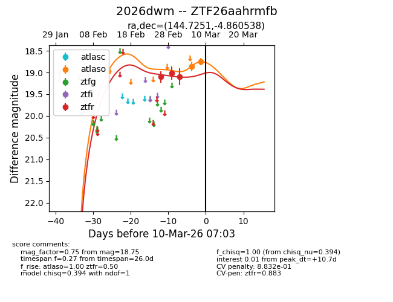
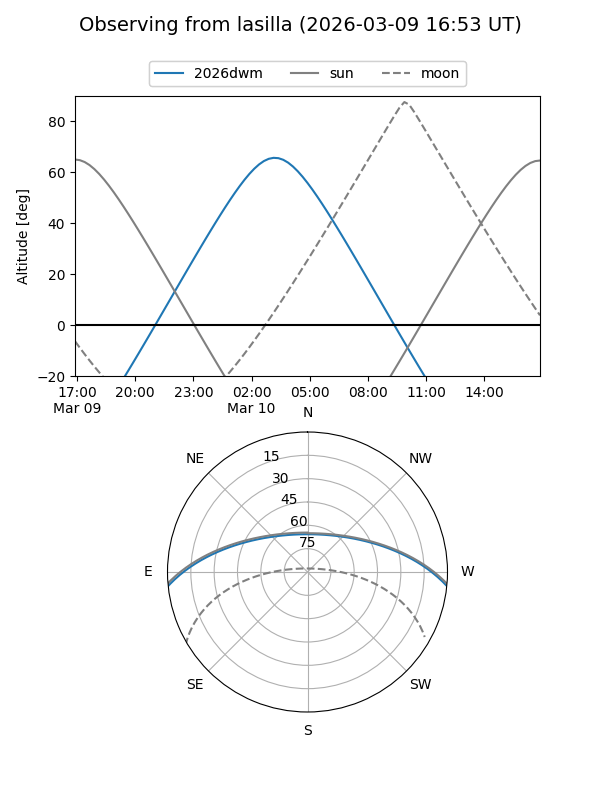
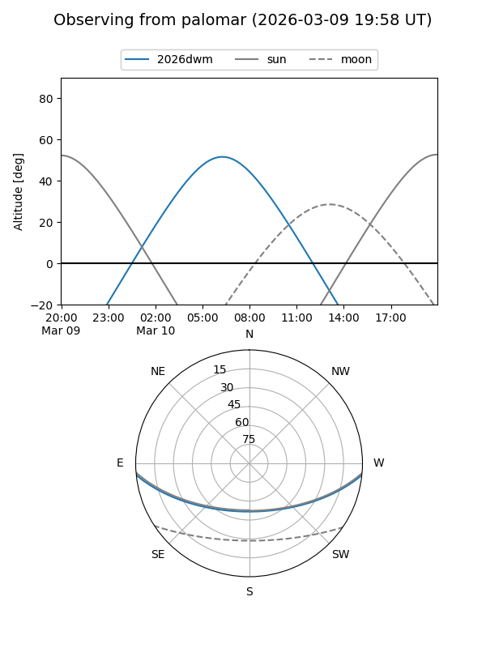
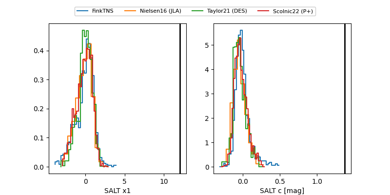

2026dwm
Target 2026dwm at 2026-03-10 07:05
Aliases and brokers:
FINK: link
Lasair: link
ALeRCE: link
TNS: link
YSE: link
alt names
ZTF26aahrmfb (ztf,fink_ztf)
2026dwm (tns,yse)
Coordinates:
equatorial (ra, dec) = 144.7251,-4.86054
equatorial (HMS+DMS) = 09:38:54.02,-04:51:37.94
galactic (l, b) = (239.9654,+33.58639)
Flags:
likely cv
Photometry:
last atlaso=18.75, ztfr=19.09
3 atlaso, 3 ztfr detections
Lightcurve

Visibility


Additional plots
